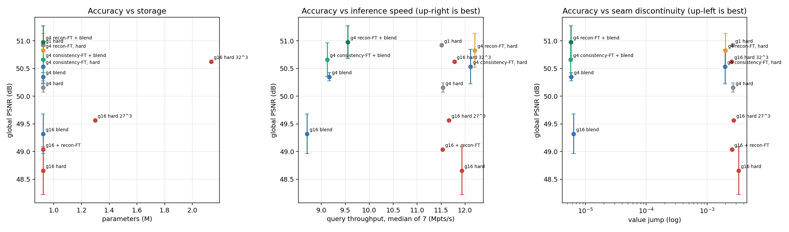

Results 27
Costs and tradeoffs

Cost
Hard
Blend
Query rate
11.5 to 12.2 Mpts/s
8.7 to 9.6 Mpts/s
Frame time
3.5 to 4.3 s
same range
Peak GPU memory
0.181 GB
0.182 GB
Parameters
923k
923k
Extra training
0 min
4 to 7 min
BOTTOM LINE
22% slower point queries
No consistent frame-time penalty. Blending adds no parameters.
Results
Seamless APMGSRN
27 / 31